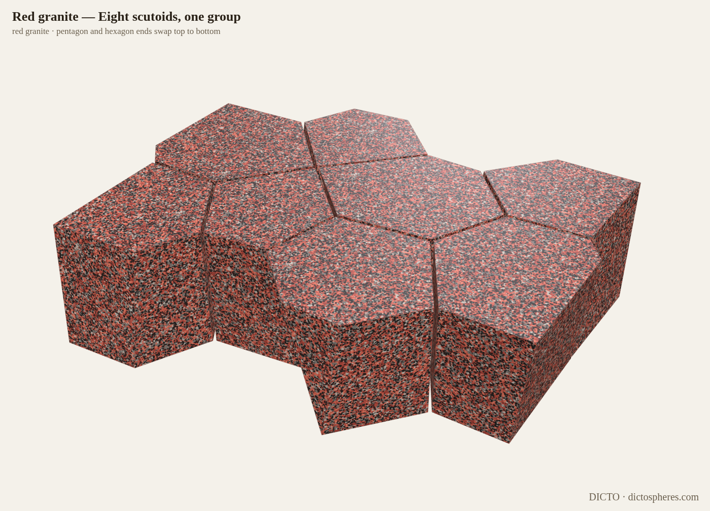
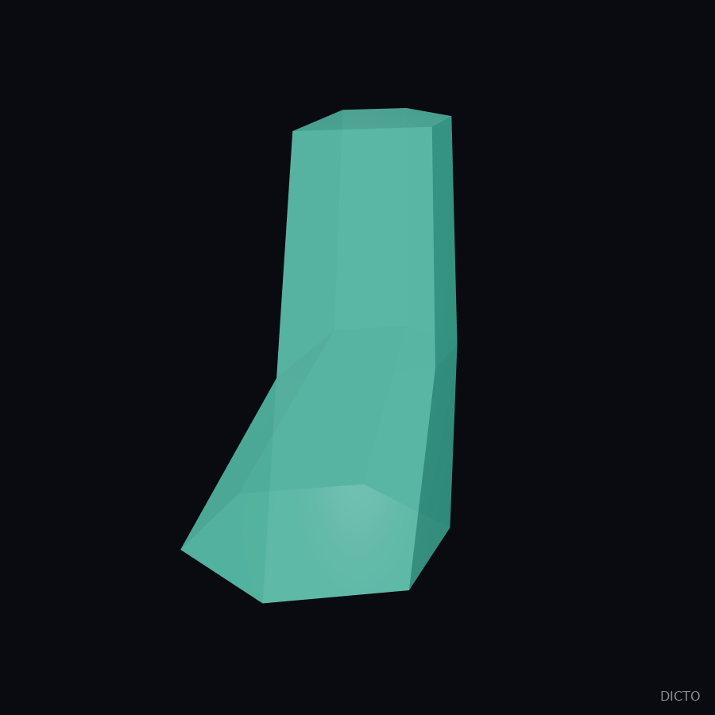
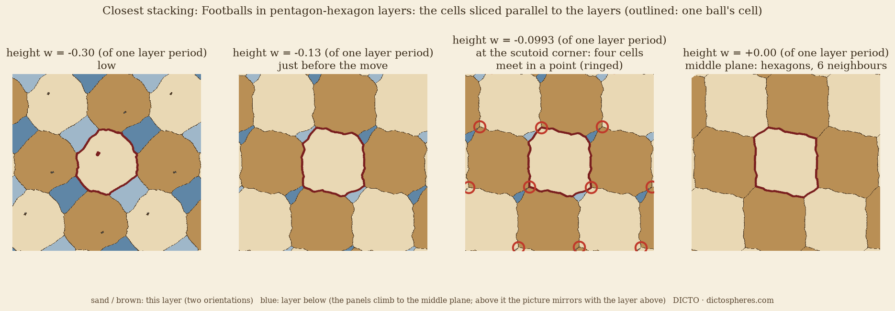
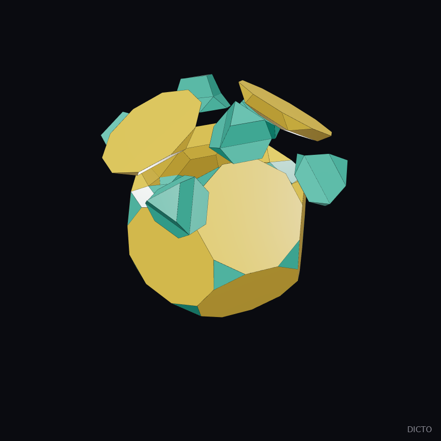
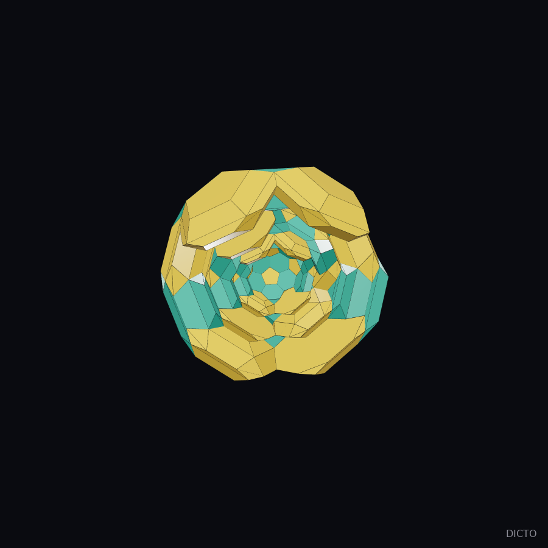

A scutoid is a cell between two surfaces whose outline changes on the way through: a hexagon at one end, a pentagon at the other, and in between one edge that shrinks to a point and reopens across, so that two cells which touched stop touching and two others start. Gómez-Gálvez and co-workers found the shape in curved living tissue in 2018. Here the scutoid is built as a geometric solid: every face flat, and the cells fill space.
Take the hexagonal tiling at height 0, shrink every second vertical edge of every second row to a point at height 1 (all cells become pentagons there), and reopen each point across at height 2. Keep every other edge parallel from level to level; then every side face is a flat trapezoid, and a linear program places the corners. A cell that gains nothing at the top is a scutoid: a hexagon below, a pentagon above, the Y-corner halfway, 13 faces, every one flat (to 10⁻¹⁵). With hexagons again at the top, flat side faces could not be reached for any edge directions in our search; there the side faces bend, as in living scutoids (a conjecture, not proved).

Eight convex scutoids, every one swapping pentagon and hexagon between its ends, fill one flat layer, and the layers stack straight up: the answer to "how many to fill space in a block". The pieces are chunky (sphericity 0.825–0.835, about that of a cube). Float parameters (Laguerre cells), faces flat by construction. Turned on its side the same group builds a wall whose face is a mosaic of pentagon and hexagon ends, sloped back like an ishigaki castle wall.

Truncated icosahedra (edge 1) in a layer, every link a pentagon facing a hexagon on one axis, the two link lines at 79.19°; layers stacked as closely as the bridges allow. Space is cut into one cell per ball, and every cell makes the scutoid move twice, below and above its layer's middle plane. The layer spacing is an algebraic number of degree 8, h = 3.43700237509909…, and the four scutoid corners form one orbit at ±0.34113 from the middle plane (computed to 400 digits).

Why flat. Each core edge and the middle edge above it are both perpendicular to the same mirror plane, so they are parallel, and the side face between them is a flat trapezoid; the same holds between the middle and the outside; a shrinking edge gives a triangle. Checked: every face flat to 10⁻¹³, every volume positive, the 32 volumes add to V(outside) − V(core) = 5.6660707968 (radii 1, 1.18, 1.42). Turned inside out (truncated dodecahedron inside) the same holds.


On triangles the plain scutoid move cannot run (a triangle losing a side vanishes); in the polar it becomes a diagonal flip. Checked: 30 equal volumes 0.2155 (rhombi at 1.25, outside at 1.55), adding to V(TK) − V(PD) = 6.4660211935.
Checked over three periods: the corners of each shell's outside are those of the next shell's inside (60 and 32), and the cell volumes add exactly (216.5210825662 and 737.4739317134).


Move only some edges, keep every face flat by linear conditions (each new edge runs along the meeting line of its two faces' planes), and let each shell's outside be the next core, each shell undoing the last. Regular solids pass back and forth unchanged. Irregular ones carry a memory. Under the rule "closest to even radial growth", every defect is conserved as a fixed scar (one edge: 99.3% heals, 0.05% stays). Under the rule "all edges as equal as possible" (no cell may turn inside out):
| Edges moved | Symmetry | Spread after each round trip (1 → 4) |
|---|---|---|
| all 30 | full | 0 — conserved |
| 6, cube-aligned | 24-fold | 4–9%, bounded |
| opposite pair | centre | 3.9 → 7.3 → 10.2 → 12.8%, slowing |
| one | mirror | 32 → 55 → 79 → 103%, steady |
| 3 random | almost none | 52 → 97 → 141 → 188%, steady |
| 15 random | none | 60 → 30 → 43 → 64%, not growing |
Isolated defects of low symmetry grow, faster the less symmetric; symmetric or crowded ones stay bounded. A lone defect does not invade its neighbours: the whole ball stretches into an egg along the defect's axis (long/short 1.07 → 1.55, then levelling), both ends distorted, a quiet belt between. This rule acts on the whole shell at once; a rule in which each cell feels only its neighbours is the open test of spreading cell to cell.
Gómez-Gálvez, Vicente-Munuera, Escudero et al., Scutoids are a geometrical solution to three-dimensional packing of epithelia, Nature Communications 9 (2018) 2960; MathWorld, Scutoid; the 2019 paper on scutoid-like shapes with Voronoi slices (planar faces by Voronoi); Hacktastic, Pairs of packable scutoids (OpenSCAD lofts, 2018); a pentagonal scutoid that tiles with itself (model site). None of these gives the flat-faced shells of Theorems 1–3 or the polar flip. DICTO studies of 17 October, 6–7 November and 10 November 2026.
DICTO: ideas, names, constructions and direction. Computation, verification and drafting with Claude (Anthropic).